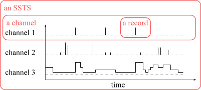
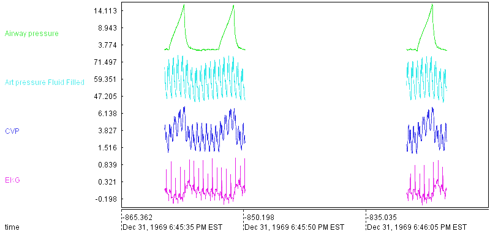
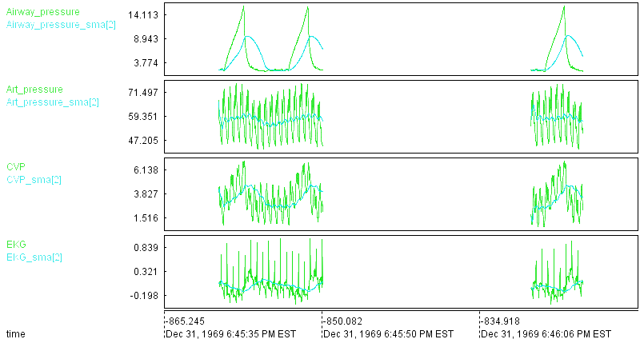
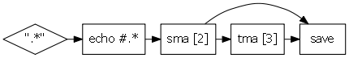

Honey | Tutorial | Beginner
Getting started
Welcome to the beginner Honey tutorial. Through this tutorial, you will lean the Honey programming language that will hopefully be useful for your research and analysis.
Before you continue, make sure that Honey is correctly installed on your computer: To do so, run honey with the command line honey in a console; or (if you do not know how to use a console) double click on the "honey" binary located in the "Honey/bin" directory. If Honey is not correctly installed, refer to the Getting Honey section.
Honey command line
Honey can be used in several different ways: Using Honey with the command line (e.g. honey source.hny) and your favorite text editor is one of the possibility. Alternatively (and preferably for new users), you can use the Honey Editor (called "HoneyEditor" and located in the Honey/bin folder). The Honey editor has several interesting features that you may find useful:
- Syntax coloring.
- Easy script execution (by pressing F5).
- Easy script syntax checking (by pressing F9).
- Plotting of Honey network.
- Integrated documentation (selects a text and press F1).
- Multiple simultaneous file editions (especially useful when your program is spread across several files).

Event viewer
Event Viewer is an essential tool to use alongside with Honey. Event Viewer is a powerful interactive visualization tool for time series, time sequences and other symbolic and numerical temporal datasets. It allows you to look and explore your data to better understand it. Event Viewer also allows you to look at the results you will obtain with your Honey programs.
Event Viewer is located in the Honey/bin folder.
For more details about Event Viewer, read the Beginner guide and watch the Event Viewer video tutorial.

Input data and output data
Before writing your first Honey program, you need to be familiar with some naming convention:
Honey datasets are SSTSs (symbolic and scalar time sequence). A SSTS is composed of a set of channels. Each channel is composed of a symbol (i.e. a name) and a set of records. A record is composed of a time-stamp and (optionally) a value. A time-stamp is a representation of time stored as a Double-precision floating-point number. Honey does not make any assumption on the unit of the time (it can be days, years, seconds, microseconds, etc). The value is a single-precision floating-point number that represent a measurement. If not specified, Honey will consider this value to be 1.
A (multivariate) time series is a special case of SSTS with uniformly sampled time-stamps. For this reason, Honey also works perfectly on time series.
The following plot shows an illustration of an SSTS.

In this plot, the channels "channel 1" and "channel 3" are plotted differently (channel 1 with "bars", and channel 3 with stairs) but they are both SSTS channels. Honey does not make any assumption about the continuity of the sampling or the nature of the channels. It is only when you will plot your data (for example with Event Viewer), that you will specify how each channels are drawn.
By convention, we call scalar channels the channels reporting continuous (or repetitive) measurements, and we call event channels the channels representing change-points. While Honey does not make any distinctions between the two, but some of the Honey function are easier to understand with this convention. Time series (as found in the literature) are by definition composed of scalar channels by definition. Note the Honey does not make any difference between the two type, and that sometime the distinction is not always clear.
Honey support several file formats to specify its input and outputs. In the beginner tutorial, we will only use two text formats: .csv and .evt. Later in the intermediate and advanced tutorials we will present and use other file formats that are better suited for larger and distributed datasets.
Bellow you can see two examples of equivalent .csv and .evt files. Note that, if in your analysis you have a .csv file with a different "structure" (e.g. the time is expressed as text, symbolic attributes, relations or entities), you can use the dirty CSV importer that will be covered in the advanced tutorial.
1 0.5 0.1
1.5 1.2 1.5
1 s2 0.1
1.5 s1 1.2
1.5 s2 1.5
In Honey, a (non dirty) csv file should only contain numerical values, and the first column, should represent the time. Alternatively, each line of an evt file is structured as "time channel value" and represent a single record.
In the advanced tutorial, we will also see the notion of entities and multiple SSTSs.
Looking at your first dataset
In the beginner tutorial, we will use the dataset "vital.csv" located in the "Honey/bin/example/data" folder. This dataset is a medical record composed of a ten seconds and a five seconds segments of various vital signs sampled at 250Hz. You do not need to understand this dataset to follow this tutorial. The folder Honey/bin/example/data contains various other sample datasets that you are welcome to play with.

Your first exercise is to look at this dataset: Start Event Viewer, click on File/Import/CsvFile and select the "vital.csv" file. By default, Event Viewer will connect the two segments for each channel. You can look at the Event Viewer video tutorial to learn how to draw the segments disconnected.
Running your first Honey program
It is now time to run your first Honey program. This first program will take the vital.csv dataset; independently compute a two seconds tailing moving average for each of the channels; and save the results in the file "result/vital_tutorial1.evt".
As a reminder, a tailing moving average (also called tailing simple moving average or taiting sma or sma or ma) is the average of a certain amount of previous observation values. For time series, moving average length is generally defined as a number of observations to average. However since Honey does not suppose the time to be uniformly sampled, Honey's moving average is expressed in time unit: A two second moving average averages all the observations in the last two seconds. Note that the number of observations in the last two seconds is variable (between 0 and 500 in the tutorial dataset). As you will see later, Honey offers different ways to deal with this way of specification, for example, by introducing a minimum number of observations.
If you feel that applying a moving average is not interesting enough, I urge you to be patient! By the end of this tutorial we will (among other things) build a heart beat calculator.
Now, open Honey Editor, create a new file, copy the content on the green box bellow in the editor, and save this file in the directory "Honey/bin/example". Next, click on Run/run (or press F5) to compile and run the program.
$all = echo #.*
$result = sma $all 2
save file:%output $result
Before we go through explaining this program, let's plot the program's result (in the file "vital_tutorial1.evt") along with the input "vital.csv". Using Event Viewer, and after playing a bit with Event Viewer display configuration, the result should look as follow:

For each of the input vital signs, you can now see a 2 seconds moving average. Each moving average is stored in a new channel which names have been automatically defined as the original channel name followed by "_sma[2]". By default, Honey generates new names for results of functions. This allows an easy understanding of what each channel represent. Of course, when many functions are applied one after another, channels names tend to be large and hard to interpret. In this case, the user has the possibility to change channels names. You can also see that the moving average is not computed in the "gap".
Now, let go quickly through the program. This is only an overview and the exact definition of Honey syntax will be given later.
- @data input:data/vital.csv output:result/vital_tutorial1.evt
This line specifies the input and output datasets of the program. Note that the result will be stored into a .evt file instead of a .csv file as for the input. Evt files are simple text files (similar to CSV file) that allow non-synchronized channels (unlike Csv files). - $all = echo #.*
This line specify that all the records of all channels available at this line (i.e. all the channels from the input file) should be directed in the signal variable $all ($ indicates that this is a channel variable). Almost all Honey programs start with this line. Note that $all can be seen as a "pipe": It does not "contain" the records, but instead indicate where the records should be directed. When used as the beginning of a constant, # indicates a filter of channel names with a regular expression. #.* actually means to select everything. - $result = sma $all 2
This line applies a SMA (simple moving average) with a 2 seconds window on all the records coming from the signal variable $all. The SMAs are applied independently on sets of records grouped by channel. The results are directed into $result. - save file:%output $result
Finally, this line writes all the records coming from $result into the .evt file specified in the "output" field in the first line of the program.
General Honey syntax
Empty lines and lines begening by the character # are ignored. Remaining lines should follow one of the following structures:
- [<destination variable> <operator>] <function name> {<anonymous parameter value>}* {<named parameter>:<named parameter value>}*
- <destination variable> <operator> <source variable>
Where [] means that the element is "optionnal", and {}* means that the element can be repeted none, one or several times.
Let's look at the sma line in the example: $result = sma $all 2.
- $result is the <destination variable>.
- = is the <operator>. = replaces the content of a variable by a new content. Honey also support the += operator. The += operator indicates that the new records are aggregate with the existing records in the destination variable. Note that += does not "addition" the values of the variables.
- sma is the <function name>. Honey supports many functions all related to SSTS processing. The definition of each function, as well as their required parameters is defined in the function reference. We will also see later that you define your own functions.
- $all and 2 are the two required (i.e. non optional) anonymous parameters of the sma function. The first parameter is a signal value (carried by a signal variable), the second parameter is a non-signal value. As we will see later, sma support several optional named parameters. For example, the signal parameter named trigger. If we wanted to specify this parameter, sma would be called as $result = sma $all 2 trigger:$some_signal.
All signal variables (i.e. variables carrying signal) start with the character $.
Functions are defined in the function reference. We will also cover in details some of the most useful functions in the last section of the beginner tutorial.
By convention, functions starting with the character @ are functions for which the location in the source code has no importance. In our example, we could have put the line @data input:data/vital.csv output:result/vital_tutorial1.evt anywhere in the source code.
All function names, parameter names, parameter values and variables names can contain spaces. To specify such element, you can use ". As an example, the four following lines are exactly equivalent:
$result = sma $all "2"
$result = sma "$all" 2
$result = "sma" $all 2
Signal variables
Signal variables are variables that "carry" records. By convention signal variables start with the $ symbol. If you remember, we said earlier that when compiled, a Honey program was converted into a process flow network, where nodes represented functions and edges represented the flow of records in between functions. Signal variables are related but are not equivalent to the edges of the flow network. For this reason, while nodes and edges of the final network are not "ordered", the order of definition and use of the signal variables in the source code is important. To illustrate this idea, suppose the following program and its process flow network.
|
Example of script
$A = echo #.*
$B = sma $A 2 $B += tma $B 3 save $B file:"output.evt" |
Becomes |

|
In this example, you can see that the signal variable $B is used and modified several times, and that it is not attached to the same edge along the program source code.
We will see in the advanced tutorial how signal variables can be used to define cycles in the networks.
A word about tailing functions
When designed a processing of a SSTS for a forecasting application (i.e. predicting the future from the past observations) it is important to ensure that the processing do not "cheat" during the testing phase by using future observations. For example, given a forecasting exercice, it would be incorrect to use record sampled at 10:00am to generate a forecasting signal at 8:00. While this is obvious, it is easy to make such mistakes when implementing complex processing. For this reason, unless specified, all Honey function suppose to be applied in an online streaming process: Given a function, a output record at time t will only depend on input records anterior to t. This ensure that Honey program always produces similar results on static and online streaming records.
In other words, functions are "tailing" functions.
Honey has two exceptions to this rules: The function echoPast that send signal "in the past", and the functions which names start by report_. echoPast is generally used for data annotation, while report functions are designed to compute some global analysis on an entire SSSTS.
Note that by combining echoPast and sma, you can create a centered moving averagre function.
If you try to run a Honey program that contain an echoPast or a report function in a online streaming mode, and error will be raised.
Non signal variables
In the previous example $result = sma $all 2, we saw the function sma which requiere one signal value and one non-signal value. This non-signal variable is the window lenght of the moving average. In this example, the signal value is provided by a signal variable $all, while the non-signal value is provided by a constant 2. Similarly to signal variable, Honey support non-signal variables. All non-signal variables start with the character %. The assignation of non signal value is done with the set function. To illustrate non-signal values, let us look at the two equivalent programs:
$result = sma $A %p
Non signal-values can be strings and numbers.
The last line of our first example was save file:%output $result. In this case, %output was actually a non-signal variable automatically defined by the @data function.
Some useful Honey functions
Now that you know that basics of the Honey programming language, we will go through the some of the most common and useful functions in Honey. The functions covered in this section are @data , echo , print , tick , sma , save , sample , set , layer , filter , rename , skip , renameRegexp and saveBufferedCsv . Note that while you will use many other functions, most functions work the same way and understanding these few examples will help you understanding other ones.
@data
The @data function specify the input and output files of the script. The input can be a file, a set of files separated by ;, or a directory. The output can be a file or a directory (in the case the input is also a directory).
When the input is a directory, the honey program will be applied independently on each file of the input directory. And an output file will be generated in the output directory for each input file (with the same name). In case of an input directory, and if the output file type is different from the input file type, you can specify the optional named parameter extension.
If several @data are specified, the honey program will be applied independently on each of them.
If several input files are specified inside of a single @data call, these files will be merged together before applying the honey program.
If you are familiar with older version of Honey, note that @data has replaced the AUTODATASET function.
By convention, because @data begins with @, the @data function can be put anywhere in the source code without any difference.
@data is not supported in online streaming mode (we will see that in the advanced tutorial).
If the input is set to "-", the input records will be read from the standard input of the program execution.
@data input:"input_1.csv;input_2.csv;input_3.evt" output:"output.evt"
@data input:"input_directory" output:"output_directory" extension:evt
@data input:"-" output:"output.evt"
Note that you can specify the input and output parameter of a script (same as @data) by using --input and --define output parameter in the Honey command line call. Example: honey program.hny --input:input_1.csv --define output:output_1.evt
echo
The echo is repeating every records it receives. In most situations, echo can and should be replaced by the += or = operators alone.
For example, the two following lines are equivalent.
$A += $B
For non advanced users, there is one situation where you will use echo: At the beginning of your honey program. When put at the beginning of the program, $all = echo #.* captures all the records provided by the input datasets. As a side note, #.* is an example of Honey global regular expression filtering that you will see in the advanced tutorial. While extremely powerful, global regular expression filtering can create cycles in your flow network without you realizing it. For this reason, it is recommended for beginner users to only use echo once at the beginning of your program.
Print displays (in the console) the name and some statistics about the records provided to the function. Print is mostly useful for debugging and monitoring purposes. You can specify the optional non-signal named parameter "label" in case you want to differentiate between several print calls.
In static execution mode (the default execution mode -- you will learn more about that later), print displays statistics at the end of the program execution. In streaming mode, print displays statistics every time a new channel is met. If you specify the named parameter every:true, print displays a line in the console for every incoming record. This last situation might produce a lot of console output.
print $A label:"This is $A"
print $A every:true
tick
tick generates a record at regular interval.
$a = tick 1.5
sma
As we saw, sma computes a tailing moving average for each input channel. The length of the moving window is defined by the second anonymous parameter.
By default, sma generates a new record every time it receives an input record, and if at least six input records are in the tailing moving window. This minimum number of records can be changed with the parameter minNumObs. The following plot illustrates the behavior of the sma function with a moving window of 10 time units.
If you want for sma to generate a signal at a specific times instead of at every new input records, you can specify the named signal parameter trigger. Every time a record is received on the trigger parameter, the sma function will (try to) generate an output record. The trigger parameter is useful to down sample and synchronize channels. The following plot shows an example of sma result with a trigger channel.
If not enough records are available, sma does not generate a record. If the named parameter emptyValue is specified, sma will generate a record with this given value instead of not generating a record.
$b = sma $a minNumObs:20
$b = sma $a minNumObs:5 emptyValue:-1
$c = tick 10
$b = sma $a trigger:$c
Many functions work in the exact same way as sma. To name a few of them: sum , count , tma , sd , windowfeatures and ema.
The windowfeatures is a function that computes several basic moving statistic. The following example shows the use of the windowfeatures function on the vital.csv dataset.
$all = echo "#.*"
$a = filter $all "Airway_pressure"
$b = windowfeatures $a 1
save $b file:%output
sample
sample samples a channel according to trigger signal parameter (similarly as sma). If not input record is available at the extract time of the sampling, the last received record is used. Using the sma (without trigger) and sample functions is similar to using the sma function with trigger.
The sample function is useful to synchronize several channels together, for example, before exporting records to a csv file (remember that CSV require all the channels to be synchronized).
By default, the name of sample output channel is defined as the input channel name postfixed by _sampled. For example, the channel "channel1" will become "channel1_sampled". You can disable this behavior by enabling the named parameter noTail.
$a = sample $b trigger:$c noTail:true
Here is an example of sample on the vital.csv dataset.
$all = echo "#.*"
$a = filter $all "Airway_pressure"
$b = tick 1
$b += sample $a trigger:$b
save $b file:%output
save
Save saves the content of a channel into a .evt file. Unlike other saving functions, save can write its incoming records as they come (instead of waiting for the end of the program execution).
The output file is specified by the named non-signal parameter file.
By default, if the output file already exist, it will be replaced. If you define append:true, the record will be added at the end of the file.
save $a file:"output.evt"
set
set defines the value of a non-signal variable.
We will see in the intermediate tutorial how to write equations with non-signal variables.
set %window 80
set %window 81
layer
layer supposes a set of threshold values and generates records indicating in which interval the current record value is in, and when there interval are changed. This is the simplest function to generate "event channels" from "scalar channels".
The thresholds are defined by the min, max and step parameter values. For example, layer $a min:0 max:10 step:2 will suppose the thresholds 0, 2, 4, 6, 8 and 10.
The following plot illustrates the behavior of the layer function.
$all = echo #.*
$a = layer $all min:1 max:15 step:3
save $a file:%output
The peak function is another example of function to generate event channels from scalar channels.
filter
filter filters records according to their channel names according to a regular expression.
# Suppose $all contains the channels "toto1", "toto2" and "tata".
$a = filter $all "toto[12]"
# $a contains the channels "toto1" and "toto2" only.
rename
rename repeats a channel (like echo) but also change its name.
By default, if several input channels are provided, an error will be raised. If the named non-signal parameter keepAll is defined to true, all the input channels will be renamed (to the same name).
# $all should contain only one channel (e.g. "toto").
$a = rename $all "value"
# $a now contains the channel "value" that contains the same records as $all.
$all = echo #.*
# Suppose $all contains several channels.
$a = rename $all "value" keepAll:true
# All the channels in $all are grouped into a new channel named "value".
renameRegexp
renameRegexp is similar to rename except that the renaming is defined by a substitution regular expression. This allows renameRegexp to rename several channels at the same time.
$a = renameRegexp $a "cat_([a-z]+)" "dog_$1"
# $a now contains three channels: "dog_blue", "dog_red", "dog_green".
saveBufferedCsv
saveBufferedCsv exports the content of a channel to a csv file.
This function is mainly useful after using Honey to compute some complex temporal processing, and when you want to use you favorite (other) language to study and plot the result of the Honey program.
Since a csv files requires for channels to be synchronized, the saveBufferedCsv function might change the data. If you know that the result of Honey is non-synchronized, and if you want to keep this non-synchronization, you can save your result in separate csv files, or you can use a file format that support non-synchronized results (e.g. save or saveBufferedBin). Note: evt files (generated by the save function) are easy to read in any language.
By default, the first column of the csv file will be the time. You can remove this column by specifying the non-signal named parameter saveTime:false.
If your channels are not synchronized, the missing value will be represented by "NA" in the csv file. You can change the value of missing record with the non-symbol parameter naSymbol.
If your channels are not synchronized, and if you want to replace NA values with the last observed value (if any), you can specify the non-signal named parameter reuseLastValue:true.
The function sample is very useful with the saveBufferedCsv function.
Note that unlike the save function, the saveBufferedCsv function needs to wait for the end of the program execution before being able to start writing the csv file. In other word, the saveBufferedCsv function will keep a copy (in memory) of the result. In large datasets, this might be an issue and using the saveCsv function might be preferable.
saveBufferedCsv $a file:"output.csv" naSymbol:0
saveBufferedCsv $a file:"output.csv" reuseLastValue:true
saveBufferedCsv $a file:"output.csv" reuseLastValue:true naSymbol:-1
$b = tick 10
$a = sample $a trigger:$b
saveBufferedCsv $a file:"output.csv"
skip
skip skips the current record if the last record is less than a certain amount of time away. In other words, skip down-samples the data.
Depending of the situation, skip might be preferable to sample.
# none of the channels in $a can have more than one record every 10 time units.
Here is an example of skip on the vital.csv dataset.
$all = echo "#.*"
$a = filter $all "Airway_pressure"
$b = skip $a 2
save $b file:%output